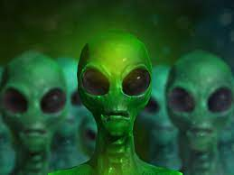

Grey aliens, also referred to as Zeta Reticulans, Roswell Greys, or Grays, are purported extraterrestrial beings. They are frequent subjects of close encounters and alien abduction claims. The details of such claims vary widely, but typically Greys are described as being human-like with small bodies with smooth, grey-colored skin; enlarged, hairless heads; and large, black eyes. The Barney and Betty Hill abduction claim, which purportedly took place in New Hampshire in 1961, popularized Grey aliens.[1][2] Precursor figures have been described in science fiction and similar descriptions appeared in early accounts of the 1948 Aztec UFO Hoax and later accounts of the 1947 Roswell UFO incident. The Grey alien has emerged as an archetypal image of an intelligent non-human creature and extraterrestrial life in general, as well as an iconic trope of popular culture in the age of space exploration.
On the evening of August 21, 1955 (67 years ago), five adults and seven children arrived at the Hopkinsville police station claiming that small alien creatures from a spaceship were attacking their farmhouse, and that they had been holding them off with gunfire "for nearly four hours". Two of the adults, Elmer Sutton and Billy Ray Taylor, claimed they had been shooting at "twelve to fifteen" short, dark figures who repeatedly popped up at the doorway or peered into the windows.[1][2] Concerned about a possible gun battle between local citizens, four city police, five state troopers, three deputy sheriffs, and four military police from the nearby US Army Fort Campbell drove to the Sutton farmhouse located near the town of Kelly in Christian County. Their search yielded nothing apart from evidence of gunfire and holes in window and door screens made by firearms.[1][3] Residents of the farmhouse included Glennie Lankford, her children, Lonnie, Charlton, and Mary, two sons from a previous marriage, Elmer "Lucky" Sutton, John Charley "J.C." Sutton, their respective wives Vera and Alene, Alene's brother O.P. Baker, and Billy Ray Taylor and his wife June. Both the Taylors, "Lucky", and Vera Sutton were reportedly itinerant carnival workers who were visiting the farmhouse. The next day, neighbors told two officers that the families had "packed up and left" after claiming "the creatures had returned about 3:30 in the morning"
Little green men is the stereotypical portrayal of extraterrestrials as little humanoid-like creatures with green skin and sometimes with antennae on their heads. The term is also sometimes used to describe gremlins, mythical creatures known for causing problems in airplanes and mechanical devices. Today, these creatures are more commonly associated with an alleged alien species called greys, whose skin color is described as not green, but grey. During the reports of flying saucers in the 1950s, the term "little green men" came into popular usage in reference to aliens. In one classic case, the Kelly-Hopkinsville sighting in 1955, two rural Kentucky men described a supposed encounter with metallic-silver, somewhat humanoid-looking aliens no more than 4 feet (1.2 m) in height. Employing journalistic licence and deviating from the witnesses' accounts, The Evansville Courier newspaper used the term "little green men" in writing up the story.[1] Other media then followed suit.
Reptilians – also called reptoids,[1] archons,[2] reptiloids, saurians, or draconians[3][4][5] – are supposed reptilian humanoids, which play a prominent role in fantasy, science fiction, ufology, and conspiracy theories.[6][7] The idea of reptilians was popularised by David Icke, a conspiracy theorist who claims shapeshifting reptilian aliens control Earth by taking on human form and gaining political power to manipulate human societies. Icke has stated on multiple occasions that many world leaders are, or are possessed by, so-called reptilians. Critics of the conspiracy theory disparagingly refer to alleged reptilians as lizard people.[8]